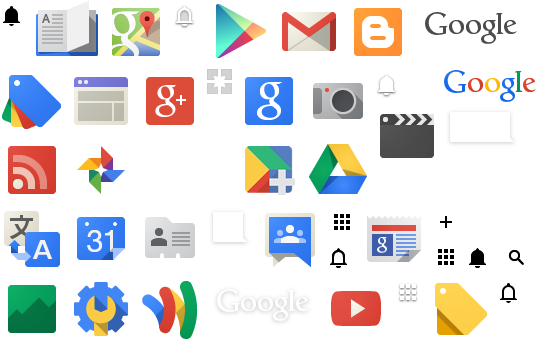

CSS-2
CSS Part 2
Какво ще разгледаме днес:
- Serving images
- Additional selectors
- CSS 3 features
- Browser prefixes
- Responsive design
- CSS Preprocessors
- and more
Images (icons)
Ако един уебсайт има много (5+) икони е добре да не правим отделни заявки за всяка от тях. Има няколко популярни начина за решаване на този проблем.
- CSS Sprites
- Data URIs (base64)
- SVG images
- Font Awesome
- UTF8 Icons
CSS Sprites
- Най-старият и изпитан начин за намаляване на request-ите за картинки.
- 
- Много картинки се сливат в една. После чрез
background-positionсе достъпва оригиналната картинка.
CSS Sprites Demo
Други подходи
- Data URIs (base64)
- В img[src] или background-image: url("...") слагаме `data:image/jpeg;base64,ENCODED_STRING` вместо адрес
- base64 encoding-a всъщност не е оптимизиран, но поне ако е в css-a ще се кешира
- SVG images
- Тенденцията в момента е към по-прости икони - те се описват много лесно с SVG.
- Можете да ги сложите inline в html-a или на теория дори и в css-a (по-трудно в IE10-11)
- Font Awesome
- Вместо да заредим много иконки ние просто зареждаме шрифт - те се намират в него
- Това има бонус, че лесно можем да променяме цвят, сянка и подобни - иначе е като sprite
- FA има множество полезни иконки за всеки уебсайт - затова е и малко по-голям
- HTML entities, UTF8 Icons, Emoji
- HTML entities работят навсякъде (→)
- UTF8 обаче също има някакви интересни символи (📖◑) макар и да не са много.
- Модерните операционни имат и доста голям набор от emoji-та - 🗻🙂⛩ (emojipedia)
Малко селектори
foo~bar- елементи bar, предшествани от елементи foo[src]- елементи, които имат атрибут src[src="//ssl.gstatic.com/gb/images/v1_3fc5b988.png"]- елементи, чийто src е равен на "//..."[src^="https"]- елементи, чийто src започва с https[src$=".png"]- елементи, чийто src завършва с .png[src*="html5"]- елементи, чийто src съдържа в себе си html5
Pseudo селектори
:empty- елемент без деца и без textNode:first-child,:last-child,:only-child:nth-child(2n+3)- 3, 5, 7, 9 etc - броенето започва от 1- Може да смените
childсof-typeза първи/последен/n-ти елемент със съответния таг. :not(some_selector)- мачва отрицанието на some_selector:beforeи:after- вмъкват съдържание преди или след дадения селектор#sasa:target- мачва когато id-то на елемента == hash частта от адреса на страницата (#sasa)
CSS3 Basic Features
text-transform- uppercase / lowercase / capitalizetext-shadow- x-offset y-offset blur colorbox-shadow- x-offset y-offset blur spread color inset. Може да се изредят няколко чрез запетайка, подобно на background.border-radius- top-left-radius top-right bottom-right bottom-leftbackground: linear-gradient(30deg, #000, #999 30%, #fff)transform- scale(1.2) rotate(10deg) translate(10px, 10px) skew(10deg)
CSS3 Basic Features Demo
Browser prefixes
- Различните браузъри имат различни render engine-и. Преди да се утвърди нещо то има експериментална поддръжка с префикс.
- Кое къде работи? - caniuse.com
- Префикси: `-ms` (IE/Edge), `-moz` (Firefox), `-webkit` (Chrome, Safari, Opera)
- Ето един по-пълен пример за linear-gradient ¿
- Неща като less и postcss могат да autoprefix-нат property-тата вместо вас
background: -moz-linear-gradient(black, white); /* FF 3.6-15 */ background: -webkit-linear-gradient(black, white); /* Safari 5.1+, Chrome 10-25 */ background: -o-linear-gradient(black, white); /* Opera 11.10 */ filter: progid:DXImageTransform.Microsoft.gradient(startColorstr='#000000', endColorstr='#ffffff'); /* IE9 */ background: linear-gradient(black, white); /* the standard */
Box Model Again
- Помните ли box модела?
Има и още един. 
- `box-sizing`
- `content-box` (стандартният начин)
- `padding-box` (лоша поддръжка)
- `border-box` (начинът на старото IE)
CSS3 Advanced Features
- `transition: 0.4s color`
- `transition: 0.4s color linear, 0.2s opacity ease-in-out`
- `width: calc(100% - 40px)`
@keyframes pulse { 0%, 100% { transform: scale(1.2); } 50% { transform: scale(0.8); } } #pulsar { animation: pulse 3s infinite; } #hoverable { background: #7D7; transition: 0.7s background } #hoverable:hover { background: #7BE; }🂡Hover over me
CSS3 Layouts
CSS3 ни дава 2+ нови layout модела
- Flexbox (complete guide)
- Предоставя доста флексибилност в подреждането на елементи в контейнер (едномерно)
- Само IE и стари андроиди имат проблеми с него
- Grid (complete guide)
- С него почти всяка прост html може да се визуализира по множество начини в 2d пространството
- 87-92% browser support за повечето функционалности от браузърите не го поддържат, но голяма част от браузърите още имат проблеми с някои по-интересни и полезни пропъртита свързани с него (например display: contents - 4 - 88%).
- Multicolumn - колони за текст, не се използва особено заради мобилните устройства
Flexbox intro
Responsive design
- aka Media queries
@media screen and (max-width: 480px) { aside { display: block; } }
Как да оптимизираме писането на HTML и CSS
- Да си изберем подходящ редактор, конфигурираме го и ако нещо ни липсва - го добавяме чрез плъгин.
- Ако ползвате Notepad++ например може да отидете в
Settings -> Preferences -> AutoComplete -> autoclose html/xml tags. - Един полезен доста плъгин е Emmet - наличен за Notepad++, Sublime Text, а е включен по default в VS Code. (примерни css съкращения)
- VS Code има и доста други разширения в marketplace-а, които улесняват писането (HTML CSS Support, Live Sass Compiler и други).
- Можем да помислим и за някакъв HTML и/или CSS препроцесор
- Можете да разгледате този линк, който е точно на тази тема
CSS препроцесори - SASS / LESS
- Това са скриптови езици, които се компилират до CSS.
- И двата езика са open-source.
- Новият SCSS (Sassy CSS) синтаксис използва подобен на CSS синтаксис с блоково форматиране и затова е предпочитан.
- Предоставят механизми за "писане" на CSS като използване на променливи, функции, миксини, влагане на селектори един в друг.
- Една от най-силните страни на тези препроцесори е, че позволяват компилиране на стиловете в реално време.
- Има и други препоцесори/синтаксиси - Stylus, SASS, PostCSS, но не са толкова популярни. Ако ползвате react - може да погледнете и styled-components. (сравнение)
Пример за променливи
- Следният Less:
@color-red: #f00; h1 { color: @color-red; } - Или аналогичният Sass код:
#color-red: #f00; h1 { color: #color-red; } - Ще се компилира до следния CSS код:
h1 { color: #ff0000; }
Пример за mixin
- Обикновено ги създаваме, за да можем да ги преизползваме в целия код, а и за да зададем по-семантични имена на стиловете ни.
- Например, можем да си дефинираме стилове само за мобилни устройства и да ги wrap-нем в създаден от нас миксин:
$small-screen: 576px; @mixin mobile-only { @media (max-width: #{$small-screen}) { @content; } } - И след това да задаваме специфични за елементите ни стилове чрез тях:
.element { padding: 15px; // change padding for phones only @include mobile-only { padding: 20px; } }
Debug
- Вече сте започнали проекта си и трябва да видите защо нещо се чупи?
- F12 е стандартната команда за отварянето на съответния DOM инспектор
- Алтернативно има и Right Click -> Inspect Element
- Можете да си пишете CSS-a на място и да виждате как се променя резултатът и после да го копирате.
- Най-вероятно ползвате Chrome, но ако още сте начинаещи в областта на CSS - Firefox може да бъде малко по-полезен за откриване на някои грешки (youtube video)
Stylebot Chrome Extension
- При инспектора обаче рискувате да не успеете да пропуснете нещо и да трябва да повтаряте действието.
- За такива ситуации има chrome extension на име stylebot - дава ви възможност да пишете директно в неговия панел и промените да се запазват. След инсталиране трябва да check-нете "Allow access to file URLs" от
chrome://extensions - Бонус: Чрез него можете и да си правите или добавяте ваши стилове към уебсайтове, които посещавате често (например нощни теми).